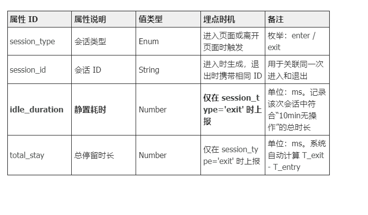
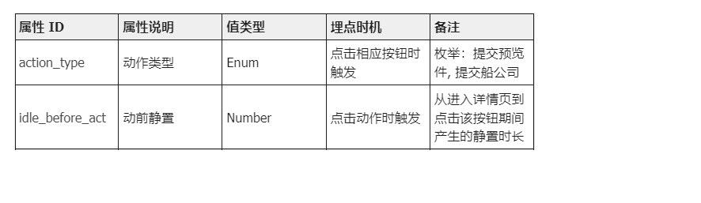
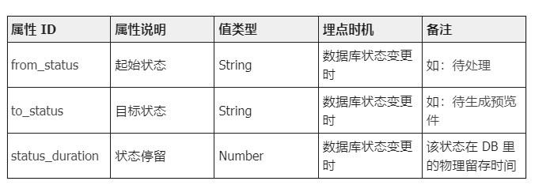
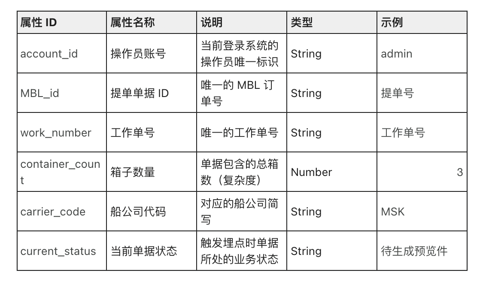
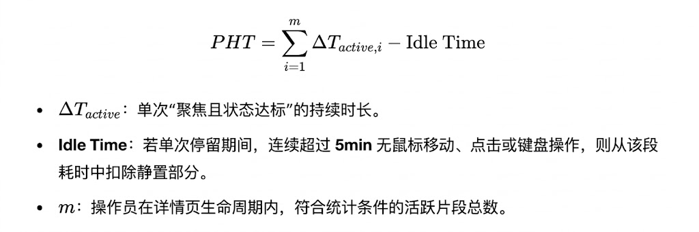
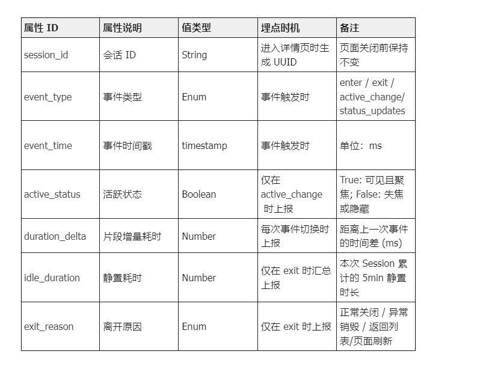
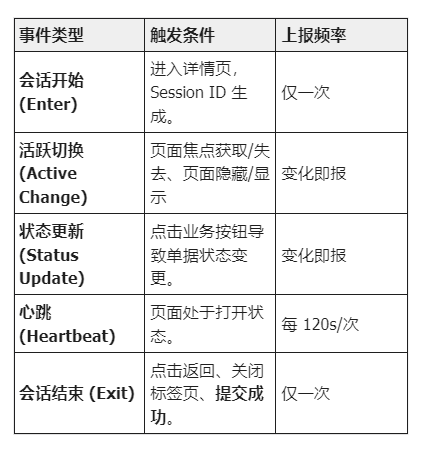

埋点需求说明
1. 净有效作业时间 (Production Human Time, PHT)
1.1 定义：操作员为完成“提交船公司成功”所投入的净有效处理时间。
1.2 仅统计：
业务状态限定：详情页处于指定业务状态 （待生成预览件、预览件生成异常、待提交船公司、提交船公司异常）
活跃状态限定：页面处于可见 + 有焦点
1.3 公式：
2 . 全链路成功耗时 (End-to-End Success Duration)
定义：单据从进入系统开始，到流程彻底结束（获取 VC）所经历的物理总时长。
计算规则：E2E Duration =VC已出 - 邮件入库/初始生成, 该指标包含了：人工处理时间 + 系统爬虫排队时间 + 外部客户确认时间 + 船公司系统响应时间。
价值：用于衡量整体交付效率，是客户侧感知的真实时效。
二、指标定义
2. 1 公有属性
2. 事件定义清单

2.2：事件1 - 详情页会话追踪 (mbl_detail_session)
事件二：作业关键动作 (mbl_op_action)
用途：记录操作员点击“生成预览件”或“提交船公司”的瞬间，作为 PHT 计算的截止锚点

事件三：状态流转记录 (mbl_status_flow)
用途：由后端触发，用于界定哪些时间段属于 PHT 统计范围。

5、PHT 指标数据说明与计算示例
假设一张单据的处理轨迹如下：
10:00：单据变为 待生成预览件。
10:05：操作员张三进入详情页（session_type: enter）。
10:05 - 10:20：操作员接了个电话，离开座位 15 分钟。
10:25：操作员回到座位，点击【生成预览件】（触发 op_action）。
10:26：退出详情页（session_type: exit）。数据表现：
total_stay: 21 分钟 (1260,000 ms)
idle_duration: 15 分钟 (900,000 ms) —— 因为超过了 10 分钟阈值
current_status: 待生成预览件 —— 符合统计限定状态
PHT 计算过程：PHT = (10:25 - 10:05) - 15min = 5

一、需求背景
在 AI-Service MBL 制单流程中，我们的核心目标是衡量：AI 带来的“真实人效提升”到底是多少？
引入“净有效作业时间（PHT）”，作为：作为：AI 自动化 ROI 衡量指标；人效 KPI 基准指标；模型效果迭代的核心监控指标
事件一：详情页会话追踪 (mbl_detail_session)
用户在进入-离开页面未操作【提交预览件】【提交船公司】的有效人效（排除了静置耗时）
3. 关键逻辑解释说明（因为状态更新会切换页面，所以事件类型去掉 状态更新 ）
3.1 Session ID 生成规则说明
操作员同时打开多个标签页处理同一或不同 MBL 时，各标签页将拥有完全独立的 session_id
操作员切换浏览器标签页、最小化窗口、切换至其他应用，均不生成新的 session_id。
状态切换记录：通过 active_change 事件记录焦点的失去与获得。PHT 只累加 active_status = True 且 current_status 符合业务限定的状态段。
3.2 静置时间 (Idle Time) 判定逻辑
触发条件：在 active_status = True 的片段中，若连续 5 分钟（包含） 无任何鼠标/键盘交互，系统应自动标记进入“静置状态”。
上报规则：除了在exit触发，前端在触发 active_change 或 status_updates 时，如果该片段内产生了静置时长，即时上报当前片段的 idle_duration
扣除规则：例如用户在页面停留 12 分钟后切走，但其中后 7 分钟无操作，则该片段记为：5 分钟有效，7 分钟静置。
例如例如用户在页面停留 12 分钟后切走，3分钟有操作，后 5 分钟无操作，后4分钟有操作，则该片段记为：7 分钟有效，5 分钟静置。
3.3 PHT 跨状态统计逻辑
若用户在详情页内点击“提交预览件”，假设单据状态立即变为“待提交船公司”，由于这两个状态都在统计范围内，计时不中断，但需通过 current_status 的属性变更来确保数据可按状态切分分析。
3.4. duration_delta 的计算触发点
当 event_type = 'enter' 时，duration_delta 应上报为 0。
在同一个 session_id 下，后续所有事件（active_change, status_updates, exit）上报的 duration_delta 物理加和，必须等于 exit_time - enter_time。
3.5 增加“心跳埋点 (Heartbeat)”以防数据丢失
针对于异常场景：例如操作员直接断网、闪退或电脑死机，前端可能无法触发 exit 事件，导致这一段的 PHT 彻底丢失。
在详情页活跃期间，每隔 120秒 自动触发一次心跳事件。
后端如果没收到 exit 事件，可以用最后一次心跳的时间戳作为“强行截止点”，保住大部分作业时长数据。
3.6 上报频率说明


